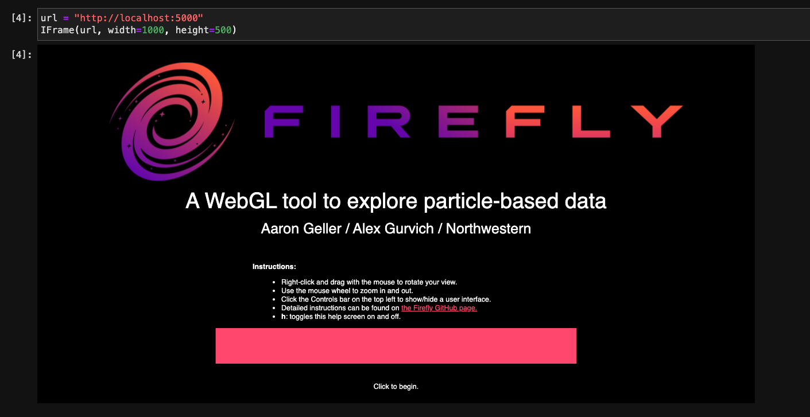

Hosting a Firefly webserver¶
Because Firefly is fundamentally a web application it must be served
to your browser from a web server.
That server can either be located on the internet or can be hosted
locally (and accessed through the localhost url).
Hosting Firefly locally¶
Note
For the Load New Data button to work Firefly must be hosted locally (vs. hosted on the internet).
Using python -m http.server to host index.html¶
Warning
Features that require Flask will not work if Firefly is hosted this way.
From within the the Firefly/src/firefly directory (or from within
the corresponding sub-directory in your site-packages directory) execute
python -m http.server
This launches a Python SimpleHTTPServer that will serve the
index.html file located in the directory where the command is
executed.
This will host a version of Firefly identical to the one hosted on
the internet with the exception that you can
use the Load New Data button.
Using run_server.py to launch Flask¶
From within the the Firefly/src/firefly directory (or from within
the corresponding sub-directory in your site-packages directory) execute
python run_server.py
Using the Firefly executable to launch Flask¶
The Firefly bash executable is a wrapper to
run_server.py so that it can be initialized without having to
be in Firefly/src/firefly directory.
It is distributed along with the Firefly source
files and Python API and is located in Firefly/src/firefly/bin
(or the corresponding sub-directory in your site-packages directory).
When Firefly is correctly installed then this directory
will be added to your ${PATH}$ variable.
You should then be able to execute
Firefly
from any directory to launch a Firefly Flask server.
Using Firefly from within a Jupyter notebook¶
Jupyter notebooks are powerful analysis tools that allow you to interactively explore your data, much like Firefly!
Because Firefly is built as a webpage it can easily be displayed, with its full functionality, within a Jupyter notebook using an iframe.
Embedding within an iframe¶
With a Firefly server hosted at localhost:xxxx you can access it by creating an iframe with the command:
from IPython.display import IFrame
url = "http://localhost:xxxx/"
IFrame(url, width=700, height=700)
Hosting a Firefly server within a notebook¶
You can even host a Firefly Flask server without going back to the command line from within a Jupyter notebook as well.
from firefly.server import spawnFireflyServer
## optionally accepts port as positional argument
spawnFireflyServer()
Where xxxx is the 4 digit port number that you’d like to host the server on.
When you would like to kill this server when you are done with it, use the command:
from firefly.server import killAllFireflyServers
## optionally accepts a single process id to kill
killAllFireflyServers()
Note that the pid is accessible from the original spawnFireflyServer()
call but that processes in general do not like to be killed and may sometimes
survive the targeted attempt on their life. It’s more reliable to indiscriminately
kill any process that has a Firefly server process name (the default).
For the details of the usage of these functions, consult the server API documentation.
Hosting a static version on the internet¶
To make Firefly accessible via the internet, the
reader.copyFireflySourceToTarget("my_Firefly")
See also
copyFireflySourceToTarget() takes an optional boolean
keyword argument init_gh_pages that will attempt to
create a new repository and enable GitHub pages automatically.
See Managing multiple datasets for details.
Accessing remote Firefly servers via port forwarding¶
Firefly can easily be hosted on a cluster environment for two main benefits:
1. Data that is stored on the cluster can be rendered without having to transfer them to ones local machine
2. Firefly can be embedded into an iframe within a Jupyter notebook hosted on the cluster
Note
The polite thing to do is to host your Firefly server from within an interactive session on a compute node, but a login node will work as well. The server will only serve the files, it won’t actually do any of the rendering, so the actual load on the login node could be small.
Note
This is an identical process to hosting a Jupyter notebook remotely on a cluster and accessing it through your local machine, so if you know how to do that you’re already set!
Once the server is hosted following one of the procedures listed in the section above the port the server is hosted on must be forwarded to your local machine. This can be done with a simple ssh command:
ssh -L xxxx:localhost:xxxx UNAME@stampede2.tacc.xsede.org ssh -L xxxx:localhost:xxxx
Note
This command can be stored in an alias in ones’ .bashrc
as something like: alias s2firefly='...'
Which is executed like:
s2firefly YYY
Where YYY is the hostname of the compute node. This command will open a pseudo-terminal once you login, it is not necessary to do anything once the connection is established but closing the pseudo-terminal window will terminate the port-forwarding.
Once the port is forwarded, simply navigate to localhost:xxxx on your computer’s browser and enjoy Firefly!
Note
This same principle can be applied to expose a locally hosted version of Firefly to users over the internet, visitable by anyone with your ip address (which one could share). The procedure for forwarding the port is different and requires going into ones’ router settings.
Warning
Doing this could expose your home computer system, proceed with caution! We do not share the details of how to accomplish this because only those who understand the consequences should attempt this!